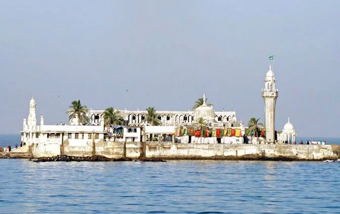

Gateway of India: The Iconic Monument
The Gateway of India is a monumental archway located in Mumbai, built to commemorate the visit of King George V and Queen Mary in 1911. It is one of the most famous landmarks in India.
Fun Fact:
~The Gateway of India was built in Indo-Saracenic architectural style and stands 26 meters tall!
Things to Explore at Gateway of India:
-
The Boat Rides:
Take a boat ride from the Gateway to enjoy views of the Arabian Sea.
-
The Colaba Causeway:
Explore the bustling market nearby for souvenirs and local snacks.
-
The Taj Mahal Palace Hotel:
Visit the iconic hotel located right next to the Gateway.
-
The Light and Sound Show:
Experience the history of Mumbai through an engaging light and sound show in the evenings.
-
The Local Cuisine Stalls:
Savor delicious street food from nearby stalls.
Why Visit Gateway of India?
!Because it’s not just a monument, but a symbol of Mumbai’s rich history and culture, offering stunning views and a vibrant atmosphere!

Marine Drive: The Queen's Necklace
Marine Drive, also known as the Queen's Necklace, is a picturesque boulevard in Mumbai that offers stunning views of the Arabian Sea. It is a popular spot for evening strolls and sunset views.
Fun Fact:
~Marine Drive is named so because of its crescent shape, which resembles a necklace when viewed from above!
Things to Explore at Marine Drive:
-
The Sunset Views:
Enjoy breathtaking sunsets over the Arabian Sea.
-
The Chowpatty Beach:
Relax at the nearby beach and indulge in local snacks.
-
The Art Deco Buildings:
Admire the beautiful Art Deco architecture along the boulevard.
-
The Local Markets:
Explore nearby markets for souvenirs and handicrafts.
-
The Street Performers:
Watch street performers showcasing their talents in the evenings.
Why Visit Marine Drive?
!Because it’s not just a drive, but an experience that captures the essence of Mumbai’s vibrant culture and natural beauty!

Chhatrapati Shivaji Maharaj Terminus: A Heritage Railway Station
Chhatrapati Shivaji Maharaj Terminus, formerly known as Victoria Terminus, is a UNESCO World Heritage Site and one of the busiest railway stations in India. It is renowned for its Victorian Gothic architecture.
Fun Fact:
~The station was built in 1887 to commemorate Queen Victoria's Golden Jubilee and is a masterpiece of Victorian architecture!
Things to Explore at Chhatrapati Shivaji Maharaj Terminus:
-
The Architecture:
Admire the stunning Gothic architecture and intricate carvings.
-
The Heritage Walks:
Join guided heritage walks to learn about the station's history.
-
The Local Cuisine:
Savor local delicacies at nearby eateries.
-
The Train Journeys:
Experience the hustle and bustle of one of India's busiest railway stations.
-
The Nearby Markets:
Explore local markets for souvenirs and handicrafts.
Why Visit Chhatrapati Shivaji Maharaj Terminus?
!Because it’s not just a railway station, but a living testament to Mumbai’s rich history and architectural grandeur!

Haji Ali Dargah: A Spiritual Oasis
Haji Ali Dargah is a mosque and tomb located on an islet off the coast of Worli in Mumbai. It is a revered pilgrimage site and a stunning example of Indo-Islamic architecture.
Fun Fact:
~The dargah is accessible only during low tide, making it a unique spiritual experience!
Things to Explore at Haji Ali Dargah:
-
The Architecture:
Admire the beautiful Indo-Islamic architecture and intricate marble work.
-
The Spiritual Atmosphere:
Experience the serene and spiritual ambiance of the dargah.
-
The Local Cuisine:
Savor local delicacies from nearby food stalls.
-
The Sunset Views:
Enjoy stunning views of the Arabian Sea during sunset.
-
The Nearby Markets:
Explore local markets for souvenirs and handicrafts.
Why Visit Haji Ali Dargah?
!Because it’s not just a place of worship, but a spiritual oasis that offers tranquility amidst the bustling city life!
Sanjay Gandhi National Park: A Green Escape
Sanjay Gandhi National Park is a large protected area in Mumbai that offers a green escape from the city’s hustle and bustle. It is home to diverse flora and fauna, as well as ancient rock-cut caves.
Fun Fact:
~The park is one of the most visited national parks in the world, attracting millions of visitors each year!
Things to Explore at Sanjay Gandhi National Park:
-
The Kanheri Caves:
Explore the ancient rock-cut caves that date back to the 1st century BCE.
-
The Wildlife:
Spot various species of birds, deer, and other wildlife in their natural habitat.
-
The Nature Trails:
Enjoy scenic nature trails and trekking routes within the park.
-
The Boating Lake:
Relax by the boating lake and enjoy a peaceful boat ride.
-
The Local Cuisine:
Savor local delicacies at nearby eateries.
Why Visit Sanjay Gandhi National Park?
!Because it’s not just a park, but a sanctuary of nature that offers tranquility and adventure amidst the urban chaos!
Chhatrapati Shivaji Maharaj Vastu Sangrahalaya: A Cultural Hub
Chhatrapati Shivaji Maharaj Vastu Sangrahalaya, formerly known as the Prince of Wales Museum, is a premier museum in Mumbai that showcases a vast collection of art, archaeology, and natural history.
Fun Fact:
~The museum was inaugurated in 1922 and is housed in a stunning Indo-Saracenic building!
Things to Explore at Chhatrapati Shivaji Maharaj Vastu Sangrahalaya:
-
The Art Galleries:
Explore the extensive collection of Indian art, sculptures, and artifacts.
-
The Natural History Section:
Learn about the diverse flora and fauna of India.
-
The Library:
Visit the museum's library for re and reference.
-
The Temporary Exhibitions:
Check out the rotating exhibitions showcasing contemporary art and culture.
-
The Museum Shop:
Shop for souvenirs and books related to Indian art and culture.
Why Visit Chhatrapati Shivaji Maharaj Vastu Sangrahalaya?
!Because it’s not just a museum, but a cultural hub that celebrates India’s rich heritage and artistic legacy!

Juhu Beach: A Coastal Retreat
Juhu Beach is one of the most popular beaches in Mumbai, known for its vibrant atmosphere and stunning sunsets. It is a favorite spot for locals and tourists alike.
Fun Fact:
~Juhu Beach is famous for its street food stalls, offering a variety of local snacks!
Things to Explore at Juhu Beach:
-
The Sunset Views:
Enjoy breathtaking sunsets over the Arabian Sea.
-
The Street Food:
Savor delicious local snacks like pav bhaji, bhel puri, and vada pav.
-
The Beach Activities:
Engage in beach activities like horse riding and camel rides.
-
The Nearby Markets:
Explore local markets for souvenirs and handicrafts.
-
The Local Performers:
Watch street performers showcasing their talents in the evenings.
Why Visit Juhu Beach?
!Because it’s not just a beach, but a lively coastal retreat that captures the essence of Mumbai’s vibrant culture and culinary delights!
Bandra-Worli Sea Link: An Engineering Marvel
The Bandra-Worli Sea Link is a cable-stayed bridge that connects the suburbs of Bandra and Worli in Mumbai. It is an iconic symbol of modern engineering and offers stunning views of the city skyline.
Fun Fact:
~The sea link is one of the longest sea bridges in India, spanning approximately 5.6 kilometers!
Things to Explore at Bandra-Worli Sea Link:
-
The Scenic Drive:
Enjoy a scenic drive across the sea link with panoramic views of the Arabian Sea.
-
The Photography Spots:
Capture stunning photographs of the bridge and the city skyline.
-
The Nearby Beaches:
Visit nearby beaches like Juhu Beach and Worli Sea Face.
-
The Local Cuisine:
Savor local delicacies at nearby eateries.
-
The Evening Views:
Experience the mesmerizing views of the city lights from the sea link in the evenings.
Why Visit Bandra-Worli Sea Link?
!Because it’s not just a bridge, but an engineering marvel that offers a unique perspective of Mumbai’s urban landscape!

Chhatrapati Shivaji Maharaj Park: A Green Oasis
Chhatrapati Shivaji Maharaj Park is a sprawling urban park in Mumbai that offers a peaceful retreat amidst the bustling city. It features lush greenery, walking paths, and recreational facilities.
Fun Fact:
~The park is named after the legendary Maratha king, Chhatrapati Shivaji Maharaj, and is a popular spot for morning walks and picnics!
Things to Explore at Chhatrapati Shivaji Maharaj Park:
-
The Walking Trails:
Enjoy scenic walking trails surrounded by lush greenery.
-
The Play Areas:
Let your kids enjoy the play areas and recreational facilities.
-
The Picnic Spots:
Relax at designated picnic spots with family and friends.
-
The Local Flora:
Explore the diverse flora and fauna within the park.
-
The Cultural Events:
Check out local cultural events and performances held in the park.
Why Visit Chhatrapati Shivaji Maharaj Park?
!Because it’s not just a park, but a green oasis that offers tranquility and recreation amidst the urban chaos of Mumbai!
Global Vipassana Pagoda: A Spiritual Retreat
The Global Vipassana Pagoda is a meditation hall and monument located in Gorai, Mumbai. It is dedicated to the practice of Vipassana meditation and serves as a center for spiritual learning.
Fun Fact:
~The pagoda is one of the largest stone structures in the world and can accommodate thousands of meditators!
Things to Explore at Global Vipassana Pagoda:
-
The Meditation Hall:
Participate in meditation sessions and learn about Vipassana meditation.
-
The Architecture:
Admire the stunning architecture and serene ambiance of the pagoda.
-
The Peace Garden:
Relax in the peaceful gardens surrounding the pagoda.
-
The Cultural Programs:
Attend cultural programs and workshops related to meditation and spirituality.
-
The Local Cuisine:
Savor local delicacies at nearby eateries.
Why Visit Global Vipassana Pagoda?
!Because it’s not just a monument, but a spiritual retreat that offers tranquility and a deeper understanding of meditation practices!
ISKCON Temple: A Spiritual Haven
The ISKCON Temple in Mumbai is a prominent Hindu temple dedicated to Lord Krishna. It is known for its beautiful architecture, serene ambiance, and spiritual teachings.
Fun Fact:
~The temple is part of the International Society for Krishna Consciousness (ISKCON) and attracts devotees from around the world!
Things to Explore at ISKCON Temple:
-
The Main Shrine:
Offer prayers and seek blessings at the main shrine dedicated to Lord Krishna.
-
The Spiritual Teachings:
Attend lectures and discussions on spiritual topics.
-
The Prasadam Hall:
Savor delicious vegetarian meals served in the prasadam hall.
-
The Gift Shop:
Shop for spiritual books, souvenirs, and devotional items.
-
The Cultural Programs:
Participate in cultural programs and festivals celebrated at the temple.
Why Visit ISKCON Temple?
!Because it’s not just a temple, but a spiritual haven that offers peace, devotion, and a deeper understanding of Hindu philosophy!
Nehru Science Centre: A Hub of Knowledge
The Nehru Science Centre is a science museum in Mumbai that offers interactive exhibits, educational programs, and workshops. It is a great place for families and science enthusiasts.
Fun Fact:
~The centre is named after Jawaharlal Nehru, India’s first Prime Minister, and aims to promote scientific literacy!
Things to Explore at Nehru Science Centre:
-
The Interactive Exhibits:
Engage with hands-on exhibits that make learning about science fun.
-
The Planetarium:
Watch fascinating shows about astronomy and space exploration.
-
The Workshops:
Participate in workshops and educational programs for all ages.
-
The Science Demonstrations:
Enjoy live science demonstrations conducted by experts.
-
The Gift Shop:
Shop for science-related books, toys, and souvenirs.
Why Visit Nehru Science Centre?
!Because it’s not just a museum, but a hub of knowledge that inspires curiosity and fosters a love for science!

Film City: The Heart of Bollywood
Film City, located in Goregaon, Mumbai, is a sprawling complex that serves as the hub of Bollywood film production. It features numerous studios, sets, and outdoor locations used for shooting films and television shows.
Fun Fact:
~Film City is one of the largest film production facilities in the world and has been the backdrop for countless Bollywood movies!
Things to Explore at Film City:
-
The Studio Tours:
Take guided tours of various film studios and sets.
-
The Live Shootings:
Watch live shooting of films and TV shows (subject to availability).
-
The Outdoor Sets:
Explore the outdoor sets that resemble different locations from around the world.
-
The Film Museum:
Learn about the history of Indian cinema through exhibits and displays.
-
The Local Cuisine:
Savor local delicacies at nearby eateries.
Why Visit Film City?
!Because it’s not just a film studio, but a glimpse into the magical world of Bollywood, where dreams come to life on screen!